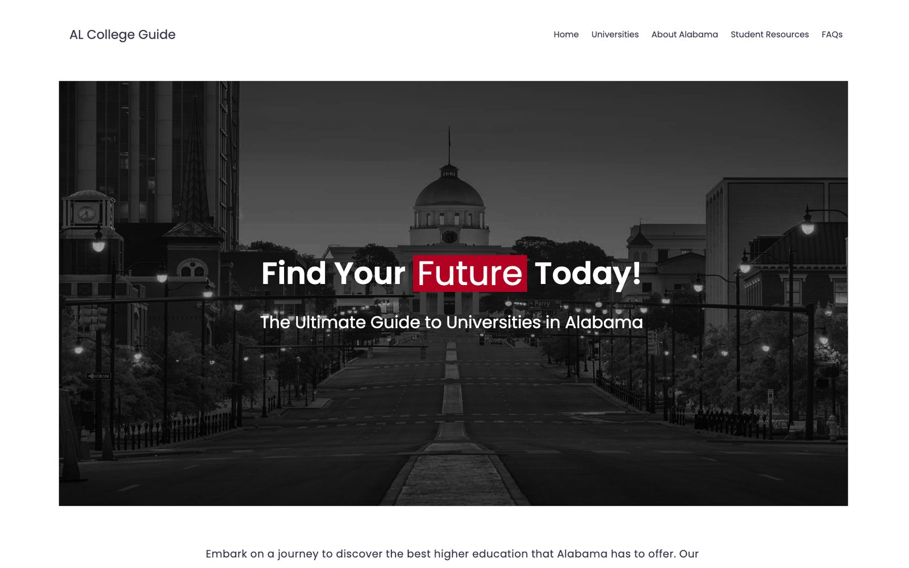
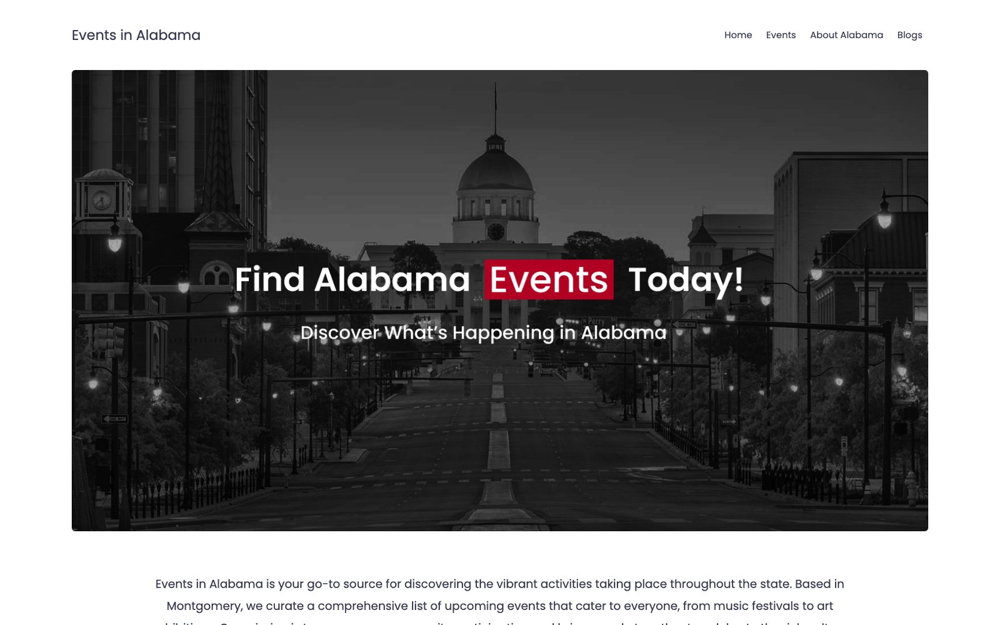

Summa Cum Laude
Highest GPA in the Class of 2026
Saint James School · Class of 2026
Summa Cum Laude scholar, two-time state champion in web design, and student leader in law, government, and service.
I’m a senior at Saint James School in Montgomery, Alabama, drawn to the places where clear thinking meets public life — courtrooms, legislatures, and the web.
I graduate with the highest GPA in the Class of 2026 and an Honors Diploma. I’ve served as a Supreme Court Justice at Alabama Youth Legislature, a judge for Youth Judicial Mock Trial, and a judicial shadowing intern with a local judge. I also won first place in Level III Web Design at the AISA State Technology Fair two years in a row, and I’ve given more than 150 hours of service — from museum education to mentoring a young student.
HTML / CSS · Figma · 3D interior design · Graphic design · Microsoft Office · Korean–English interpretation
Korean (native) · English (fluent) · Spanish (elementary)
Law & government · Reading — I run the book review account @archivedbooks_ · Golf · Travel (40+ U.S. states)
Highest GPA in the Class of 2026
Level III Web Design, AISA State Technology Fair — back-to-back
Scholastic Writing Awards — advanced to nationals
Shadowed a local judge to observe courtroom proceedings, judicial decision-making, case management, and the daily responsibilities of the bench.
Guided international visitors through royal palaces and heritage sites in Korean and English, explaining history, architecture, and cultural traditions.
Co-managed multiple rental properties: coordinated repairs and contractors, created 3D interior designs, sourced furniture, supported renovations, and interpreted for international guests.
Planned workshops and events for the FLIMP and Fall Festivals, designed learning materials for young visitors, and helped curate an exhibition — choosing its theme, name, and artworks.
Korean–English interpretation for international visitors at heritage sites in Seoul.
Unified partner in a doubles tennis tournament for athletes with disabilities.
Mentored a young girl from an abusive household and helped her catch up academically.
Packed food boxes for seniors during the government shutdown.
Cleaned enclosures and helped care for an eagle and a turtle.
Led and organized community service events, including annual blood drives. Selected as the club’s treasurer for four school years.

A guide that helps students and parents compare six Alabama colleges side by side — tuition, popular majors, average test scores, and campus culture.
I researched what families weigh when choosing a college, designed the layout in Figma, then built it in HTML and CSS with a college comparison feature and a simple system for keeping the data current.

A curated guide to what’s happening across the state — music festivals, food fairs, community gatherings, and cultural events — built to encourage community engagement.
I gathered upcoming events from across Alabama, designed the layout in Figma, then built the site in HTML and CSS with pages for events, the state, and a blog.

A selection of graphic design, visual art, and 3D interior design work.
View gallery →An Instagram account where I review and recommend the books I read.
Visit on Instagram →Thank you for visiting. I’d be glad to share more about my work.